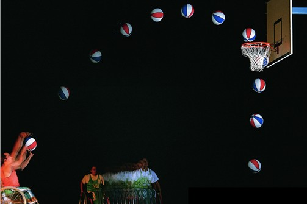
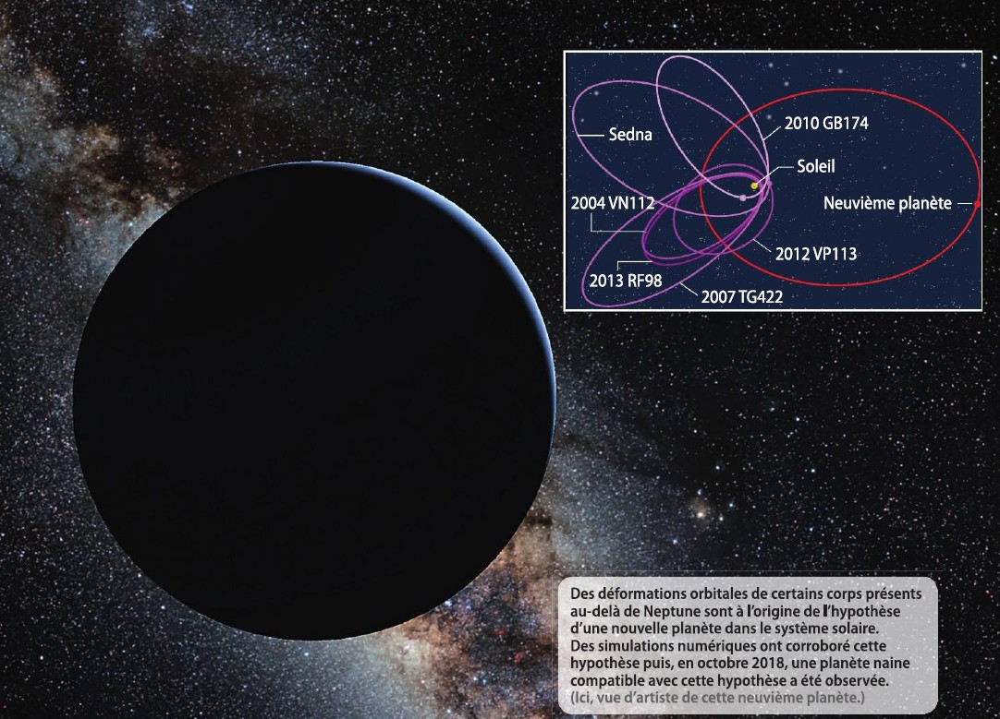

*
Avec le professeur de Physique-Chimie-
Mr. TCHIKOU Redhouane.
redo009@gmail.com
*
13- Mouvement d'un système.
|
Chapitre 13 |
Mouvement d'un système |
Série |
|
Corrigé |


1-Vidéo mouvement rectiligne
2-Vidéo mouvement curviligne
Pour créer un bouton HTML qui permet de remonter en haut de la page, vous pouvez utiliser un lien ancré avec un attribut `href` pointant vers le haut de la page, souvent représenté par `#`. Voici un exemple de code que vous pouvez insérer dans votre page HTML : ```html

TR Production - redo009@gmail.com